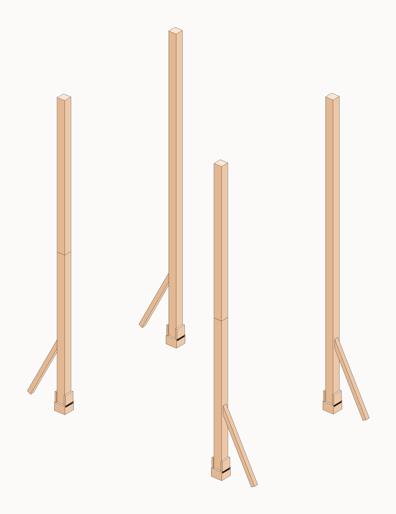
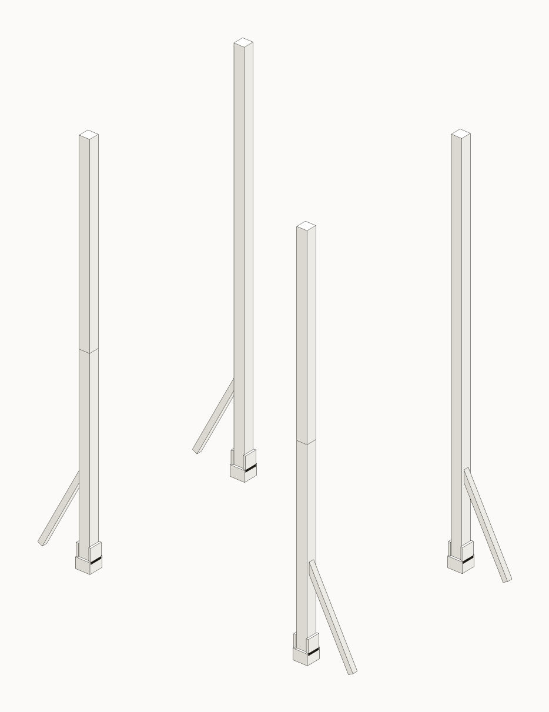
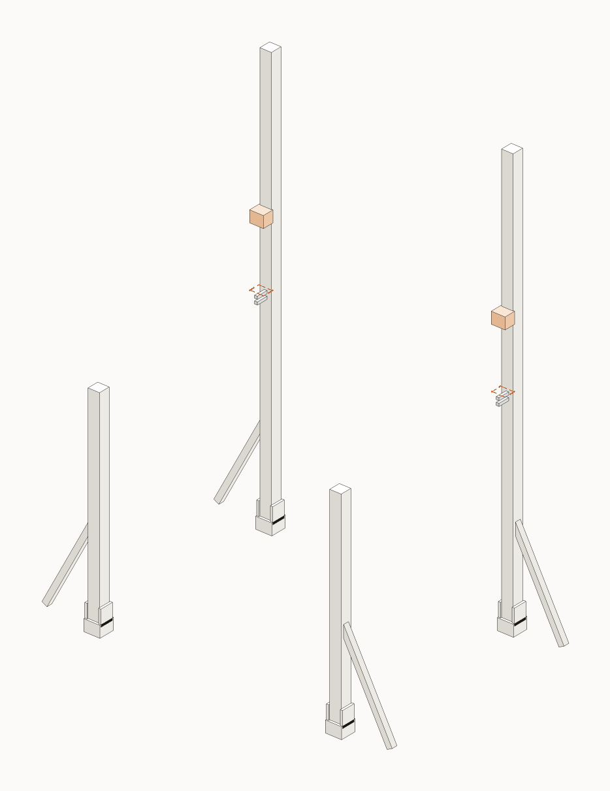
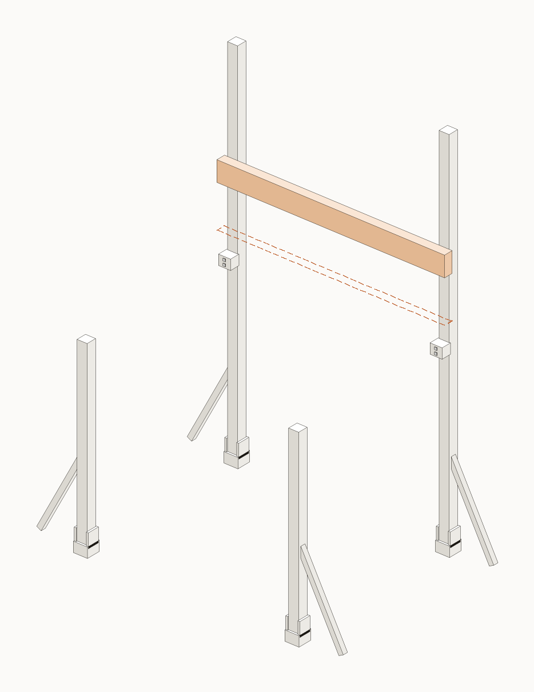
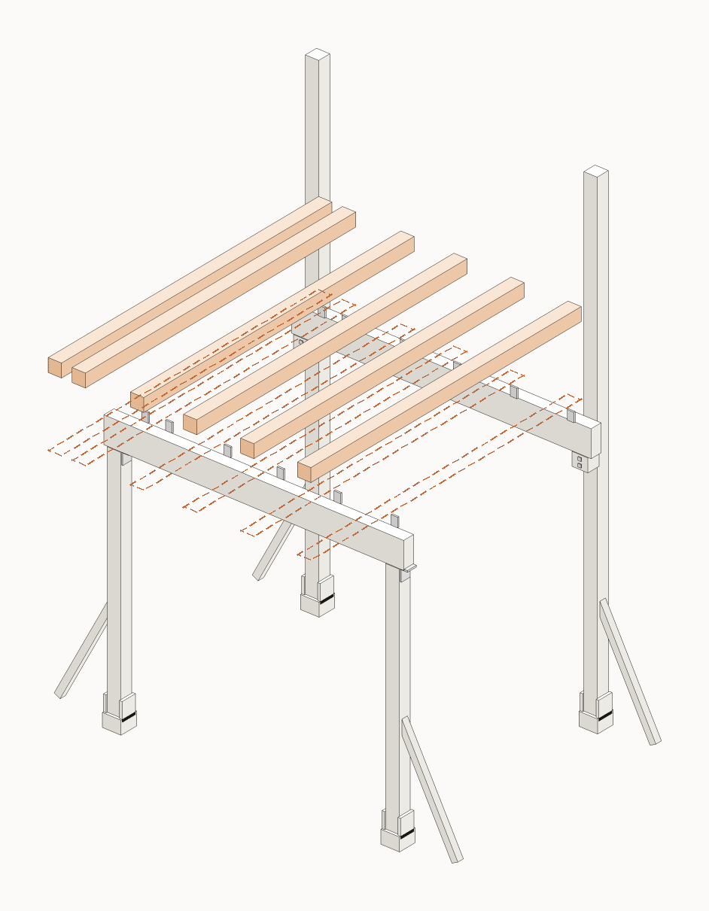
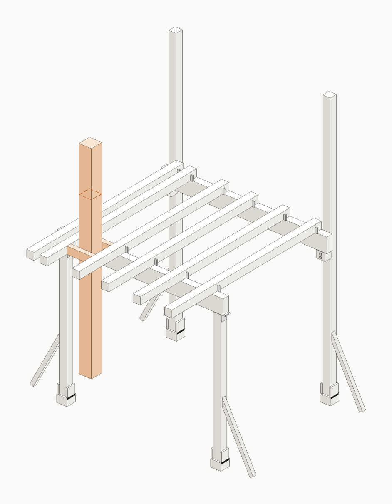
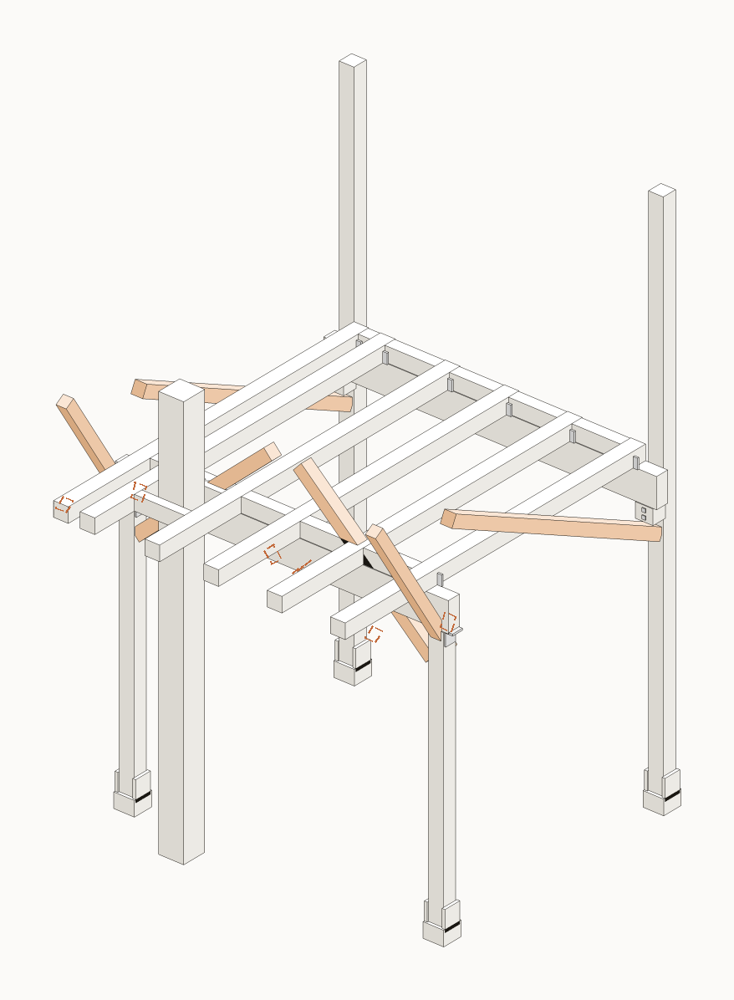
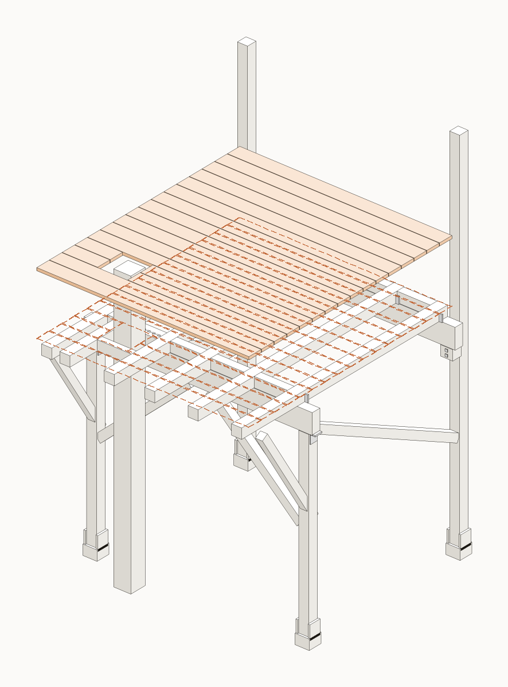

Faza 1 · platforma · stil IKEA
Fise de montaj
Cele 11 etape, fiecare ca o fisa de sine statatoare: piesele cu poza si cod, sculele, fiecare pas cu desenul lui (piesa noua intra cu sageata), bule de zoom la imbinari si verificarea de la final.

01/11
Stalpii in papuci
~2-3 oreMediu

02/11
Nivel +2200 si taiere stalpi fata
~1-2 oreCRITIC

03/11
Polite pe stalpii din spate
~1 oraCRITIC

04/11
Grinda din spate pe polite
~1 oraCRITIC

05/11
Grinda din fata pe varful stalpilor
~1 oraCRITIC

06/11
Cele 6 joiste
~2 oreCRITIC

07/11
Gaura copacului si masa
~1-2 oreAtentie

08/11
Blocaje intre joiste
~1 oraNormal

09/11
Contravantuiri si scoatem proptelele
~2 oreCRITIC

10/11
Dusumeaua de larice
~3-4 oreNormal

11/11
Balustrada si poarta
~3-4 oreCRITIC